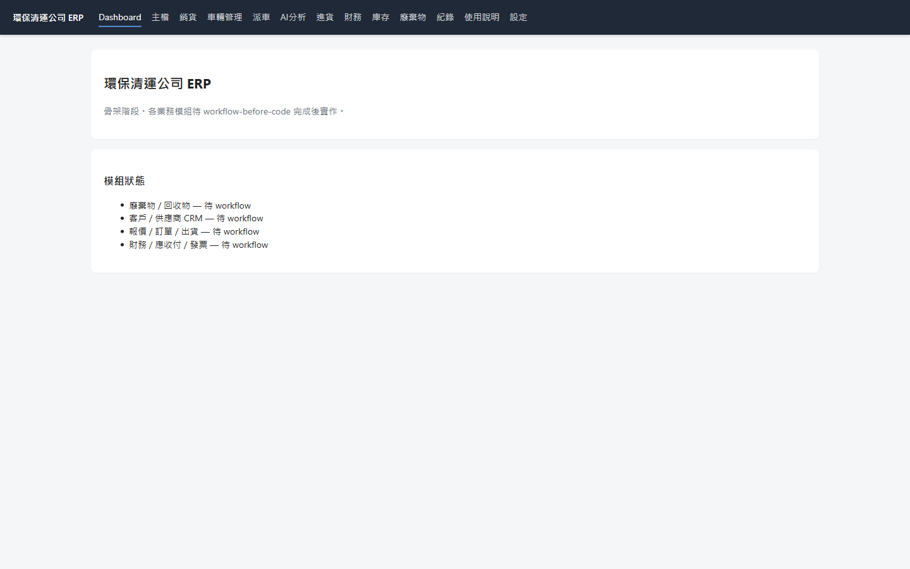
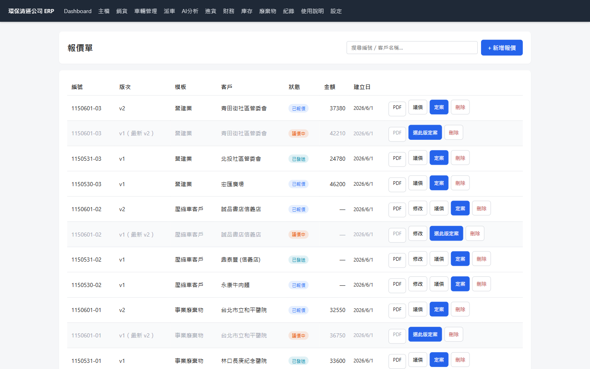
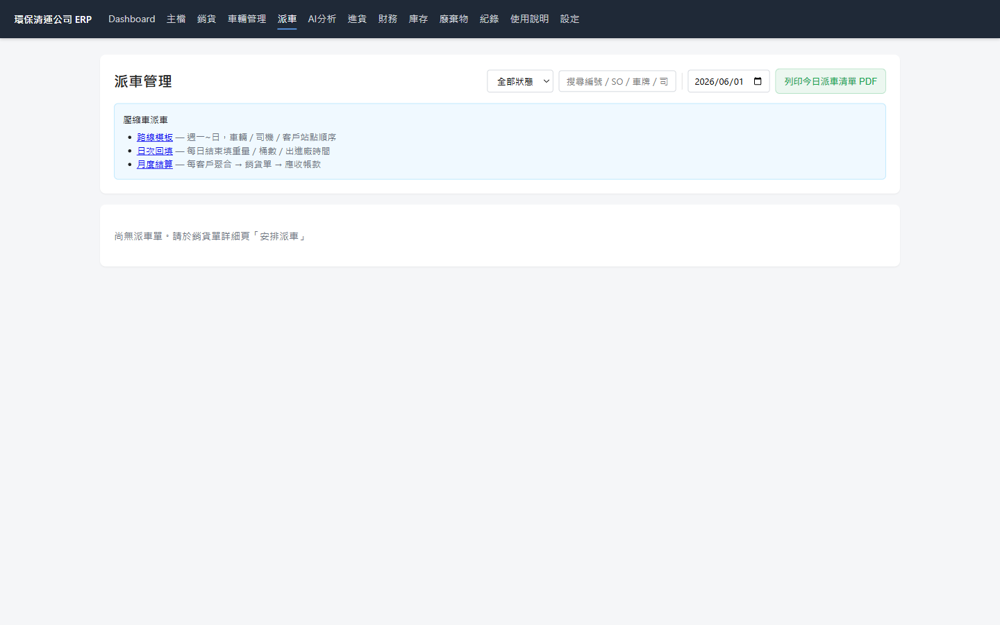
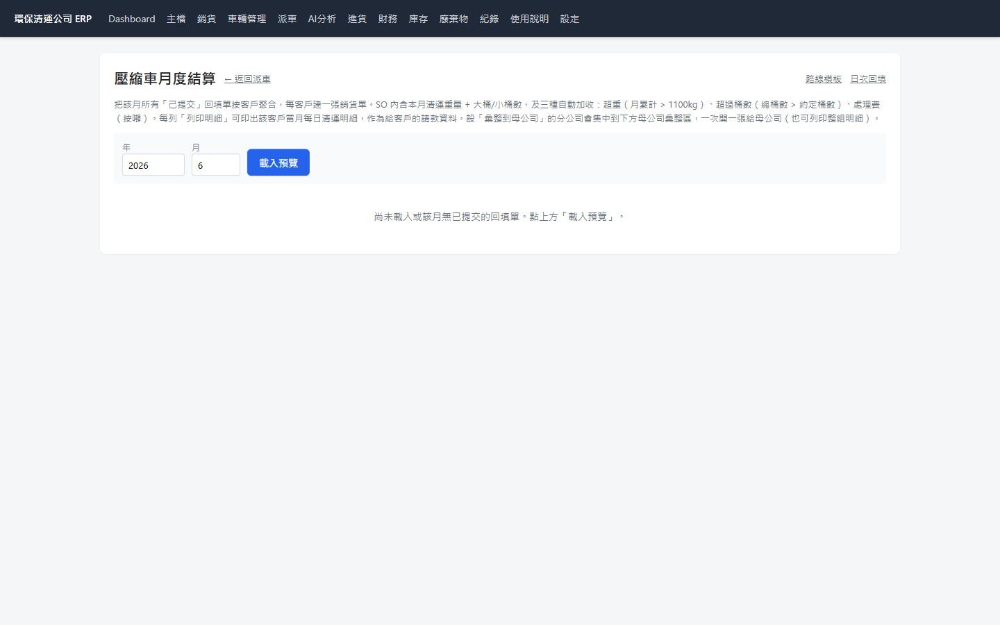
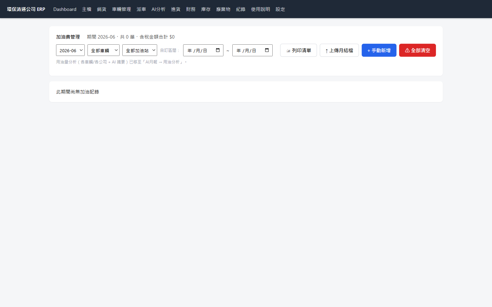
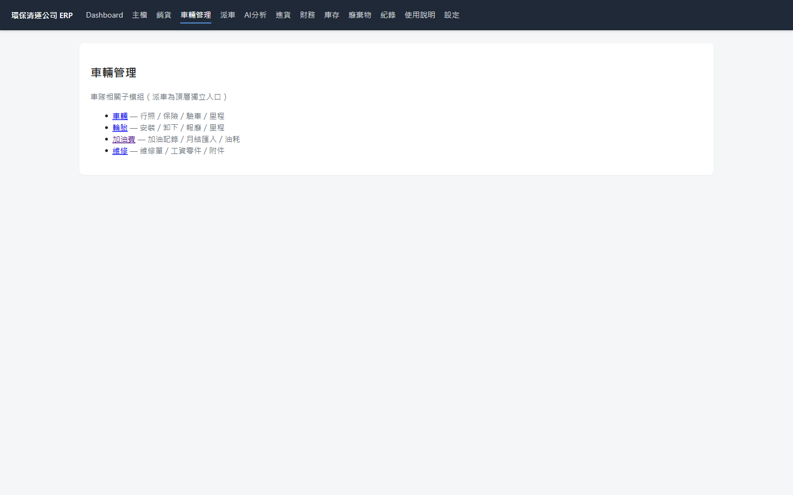
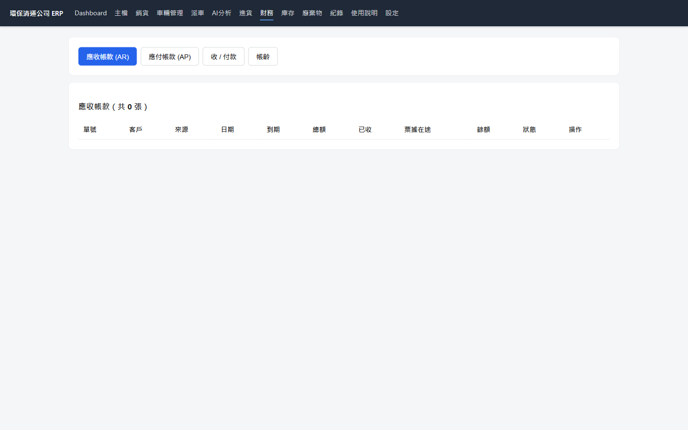
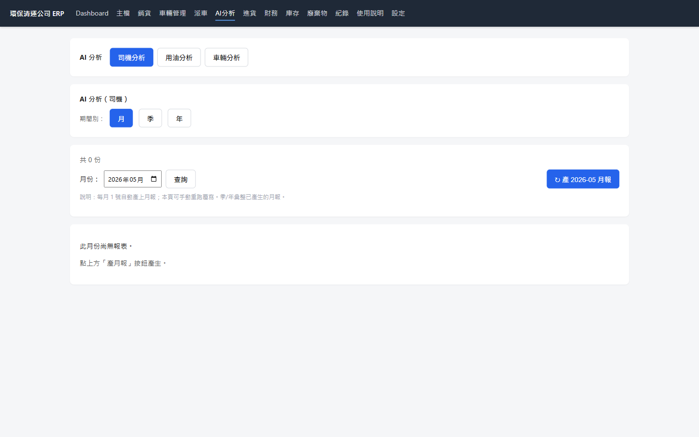
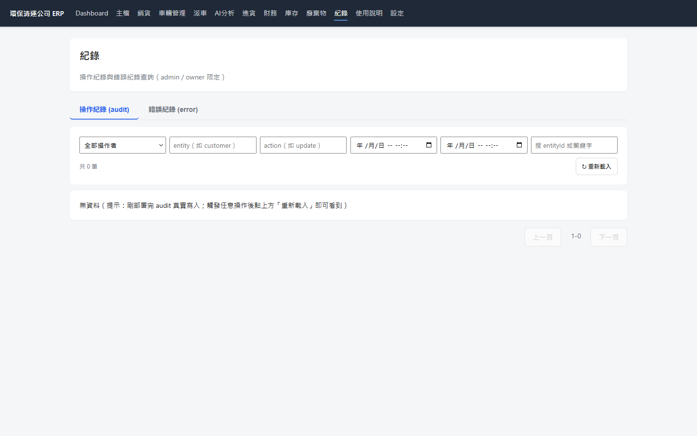

已上線多月的真實 SaaS 案例 — 派車管理、三種報價模板、加油費三油商匯入、
AI 司機月報、LINE 群組客服、EPA 廢棄物代碼……從紙本派車到全流程自動化。
⚠ 新增痛點：年度合約修改困難、合約重新製作得加班處理 → 系統內合約管理自動提醒。
15+ 輛車隊（壓縮車、勾臂車、垃圾車）、20+ 名第一線司機與後勤人員、服務範圍涵蓋家庭定點清運、事業廢棄物、營建廢棄物三大業務線。
每天早上 5 點開始排車，紙本登記、白板貼便利貼，臨時插單就重排，常常忘記交代車輛要繞去哪。
家庭定點月結（清運次數計費）、事業廢棄物（按重量+表處）、營建（趟次+里程）—— Excel 算到頭昏。
山隆、台糖、統一三家油商月結檔格式都不一樣，會計每月花 2 天逐筆對到車輛、司機、加油站。
每月底填申報表，要對接運送聯單、處理廠簽收、管制編號 —— 漏填一張被環保局罰款 6 萬起跳。
不是通用 ERP 改一改。每個欄位、每個流程、每個報表，都是從台灣環保清運業真實作業流程長出來。EPA 廢棄物代碼、壓縮車桶數計費、油卡三油商兼容，這些都不是套裝軟體會有的。
客戶用 LINE 詢價 → 業務開報價單 → 客戶確認轉成銷貨單 → 派車 → 司機完工 → 自動轉應收 → 月結請款 → 對帳。
家庭月結 / 事業廢 / 營建，同一套銷貨單，三個模板。共用客戶主檔、共用車隊、共用會計。
派車完成 → 自動轉應收。司機完工按一鍵，後台會計就有帳。零人工搬資料。
每筆操作（誰、何時、改了什麼）都進 Audit Log。爭議追到具體操作者。
頂部統一導覽：Dashboard / 主檔 / 銷貨 / 車輛管理 / 派車 / AI 分析 / 進貨 / 財務 / 庫存 / 廢棄物 / 紀錄 / 設定。模組獨立可開可關，按需開通。

客戶導入時可只開「主檔+銷貨+派車+財務」四個核心，後續再加 AI 分析、庫存、廢棄物等模組。
每個模組上線前先做業主流程訪談，文件確認後才開發。避免「做了用不到」的窘境。
每個模組頁面內附 Markdown 使用手冊。新人不用看 PDF、不用打電話問人。
三種業務（壓縮車客戶 / 事業廢棄物 / 營建業）用三套報價模板。版次管理：客戶議價可開 v2，原 v1 自動鎖定。狀態徽章一眼看出議價中 / 已發送 / 已報價。

壓縮車：月結桶數 + 大/小桶數 + 超重費。
事業廢：重量 + 表處 + EPA 代碼。
營建：趟次 + 里程 + 過磅費。
客戶覺得貴 → 開 v2 報價單，原 v1 自動標「議價中」，定案後鎖定。整個議價歷史完整保留。
每張報價單一鍵產 PDF，模板可客製公司 Logo / 抬頭 / 條款。客戶可以線上看 PDF 不用 Email 來回傳。
兩種派車模式：一般單（事業廢/營建）開派車單、壓縮車（家庭月結）用路線模板每日回填。一個畫面統管。

壓縮車的固定路線（週一~日 × 客戶站點順序）建一次模板，每天自動帶出當日路線。
司機完工後回填：每日結束桶量、桶數、出進廠時間、里程。月底自動結算到月結帳單。
已安排 → 已派發 → 已抵達 → 已完成 → 已回廠 → 已結帳。司機按按鈕推進、後台會計同步更新。
把該月所有「已提交」回填單按客戶聚合 → 每客戶建一張銷貨單。內含本月清運重量+大/小桶數，三種自動加收：超重（月累計 > 1100kg）、超過桶數、處理費。

① 月累計 > 1100kg → 自動加超重費
② 超過合約桶數 → 自動加桶數費
③ 處理費依公司類型自動帶入。
會計再也不用算到天昏地暗。
客戶有分公司？設定「彙整到母公司」，分公司會集中到母公司彙整區，一次開一張帳單給母公司（也可列印分公司明細）。
山隆、台糖、統一三家油商，月結檔格式各不同。系統內建 parser 自動偵測表頭欄位，逐筆對到「車輛、司機、加油站、油品、金額」全自動匹配。非華品車輛進「未匹配清單」由人工處理。

山隆、台糖、統一格式自動偵測。.xlsx 上傳即匯入。
依車牌、司機名稱、加油站三維度智慧比對 + 部門編號自動帶入。
司機加油完用 LIFF 拍發票 → GCV OCR 自動讀油量金額 → 直接補單，不用等月結。
車輛 / 輪胎 / 加油費 / 維修 四個子模組。從買進、安裝、保養到報廢，整個生命週期都在系統內。

行照、保險、驗車、里程。到期前自動 LINE 提醒。
序號 + 安裝/卸下/報廢追蹤。GCV OCR 側標自動建檔。
月結匯入 + 司機拍發票補單。油耗統計給 AI 月報用。
維修單 + 工資零件 + 附件。自動轉應付帳款給維修廠。
四個 tab：應收帳款 (AR) / 應付帳款 (AP) / 收付款 / 帳齡。所有來源（銷貨單、進貨單、維修單、外協維修費）自動進帳。收付款支援拆帳、票據生命週期追蹤（已收→已存→兌現/退票）。

銷貨單（SO）、進貨單（PO）、維修單、維修廠費用，完工/結算自動進 AR 或 AP。會計不用再 key 一次。
客戶開支票 → 系統記「已收票」→ 業務存入銀行 → 「已存」→ 兌現/退票自動更新狀態。退票自動沖回應收。
每月 1 號凌晨 02:00 自動跑（Cron）。三個 Tab：司機分析、用油分析、車輛分析。每位司機自動產出 KPI + Claude Haiku 撰寫的中文評語（100 字內）+ A-D 評分。

評分 / 里程 / 加油 / 輪胎損耗 / 維修成本。月 / 季 / 年三種彙整方式。
「A 司機本月油耗 8.5km/L 優於同型車均值 7.2，無異常派車，績效優異。建議續發績效獎金。」
每位司機評語成本 NT$ 0.005。10 位司機每月 NT$ 0.05。
司機掃 QR 綁定 LINE → 進 LIFF 看今日派車單 → 抵達現場按「已抵達」→ 拍磅單 → 完工按「已完成」→ 回廠按「已回廠」。整個工作流在 LINE 內完成，不用裝 App。
已派發 / 已抵達 / 拍磅單 / 已完工 / 已回廠。大字易按。
儀表板里程拍照、加油發票拍照 → AI 自動讀數字。免人工 key。
三套 Rich Menu（司機 / 業務 / 客戶）依角色顯示快捷選單。
明日派車、月報出爐、異常派車警示，主動 LINE 訊息推送。
零硬體投入。手機就是工業電腦。新司機到職當天上線。
合約截止日期到期 → 系統自動新增下年度合約草稿 → 45 日前 LINE 提醒業主下載新合約 → 送客戶用印 → 回傳上傳系統。
基礎流程已上線，下一步是把 AI 用得更深：客戶 LINE 群組客服自動回覆、AI 分析司機績效（已上線）、AI 分析車輛獲利效率（規劃中）。
① LINE 群組客服：客戶來電/詢價最常重複，AI 處理 80% 一般問題，業務只看複雜案件。
② 司機績效：環保業司機是核心成本，數據化才能公平打獎金、留住好司機。
③ 車輛獲利：14 輛車哪輛最賺？哪輛賠錢？數據在手才知道該不該汰換。
把客戶加進公司 LINE 群組，AI 助理 24 小時聽訊息。常見問題（查進度、查報價、查發票、何時派車）AI 直接回；複雜問題標記給業務跟進。
客戶第一次掃 QR 綁 LINE，之後查詢自動帶身份。
「明天會幾點到」AI 查派車單回覆。
主管查特定司機本月 KPI。
「上次報多少」自動帶最新報價單 + PDF。
查特定銷貨單狀態、實際出貨日期。
客戶問本月還欠多少、何時付款。
每月 1 號 AI 月報出爐 LINE 推給主管。
業主用 LINE 改設定（如新增司機綁定）。
輸入關鍵字搜報價/派車/銷貨/客戶。
不限定指令格式。客戶可以自然語言問「我們公司這個月清運了幾趟」「上次那台壓縮車什麼時候會回來收」，AI 用 Claude 解析意圖 + 查資料庫 + 回覆。
每月 1 號凌晨 02:00 系統自動跑 monthly-driver-report 排程：抓上月所有司機數據 → 計算 5 KPI → 送 Claude Haiku 產評語 → 存 PDF → LINE 通知主管。
「A 司機本月油耗 8.5km/L，優於同型車均值 7.2，里程 4,200km 達成度 105%。無維修紀錄、無異常派車。績效優異，建議續發績效獎金 + 公開表揚。」
「C 司機本月油耗 6.1km/L，低於均值 17%。有 2 次異常派車（兩天內派同型路線）+ 1 次維修（剎車）。建議主管面談了解原因，並安排油耗節能訓練。」
用客觀數據評估，避免主觀偏好。司機看到評語也服氣，知道改善方向。績效獎金發得有依據，留住好司機。
15 輛車裡誰最賺、誰賠錢？單看油耗或維修費不夠 —— 要綜合分析營收、成本、稼動率，AI 才能給出正確答案。
每輛車本月維修花了多少。老車維修成本高得驚人。
km/L 油耗、本月油費總額。柴油車跟瓦斯車差很多。
本月跑了幾趟、累積里程。稼動率低的車要找原因。
本月換了幾顆胎、舊胎用了幾月才報廢。胎損耗快暗示開車習慣或路況。
該車跑的趟次帶來多少銷貨金額。淨利 = 營收 − 油費 − 維修 − 折舊 − 司機工資。
「CCC-1234 本月淨利 NT$ 35,000（營收 80k - 成本 45k），稼動率 85% 為車隊之首，建議續用 + 增派固定路線。BBB-5678 本月淨利 -NT$ 8,000（連 3 月虧損），維修成本占營收 60%，建議評估汰換或轉做備援車。」
客戶資料、報價、營業數據都是商業機密。FDE 採用銀行業同等級的安全規範。多租戶 SaaS 確保不同公司資料完全不會互看。
所有使用者密碼經 bcrypt 雜湊（單向加密）後儲存。即使 DB 被偷，駭客也無法還原原始密碼。
登入後拿 access token（15 分鐘有效）+ refresh token（30 天可換新）。下載連結用獨立 download token（7 天）。Token 偷走也只能用一小段時間。
Content Security Policy 防止 XSS 注入、防止點擊劫持、強制 HTTPS。Web 弱點掃描 OWASP Top 10 全過。
每個業務表都有 tenantId 欄位。Prisma extension 在所有 query 自動注入 tenant_id 過濾，工程師不可能寫出「跨租戶看到別人資料」的 bug。
每一個 API 呼叫都記錄：誰、何時、做什麼、改了哪些欄位、IP 來源、UserAgent。爭議「資料是誰改的」一秒查清。
所有 LINE 推播必走 safeSend：先試 reply token，失敗自動 fallback 到 push API。3 秒 timeout 不會卡住 webhook。
資料每日加密備份到企業 NAS。30 天日備 / 12 週週備 / 24 個月月備。即使整台 server 燒掉，最多丟 24 小時資料。

每晚凌晨 3 點，PostgreSQL 完整 dump 後壓縮。一次備份約 5-50MB（依資料量）。
備份檔用 GPG AES-256 對稱加密。即使檔案外洩，沒有密鑰打不開。密鑰另存安全位置。
加密後的備份檔自動推到企業 NAS（QNAP / Synology 皆可）。客戶實體環境內，不靠雲端。
近 30 天每天一份、近 12 週每週一份、近 24 個月每月一份。要救哪一天的資料都救得回。
不是一次上線全部功能。先做核心、跑順、再加進階。每階段獨立可運作，業主驗收滿意才進下一階段。
4 角色帳號 + 15 客戶 + LINE 綁定 + LIFF 卡片 + 派車今日/明日查詢 + Rich Menu 3 套。系統正式跑生產作業。
報價單微調（B1 ✅）+ 報價單版次客戶確認（B2）+ 派車進度查詢 + 司機績效分析（B3）+ 車輛獲利效率分析（B4）+ 壓縮車細部欄位（B3 ✅）。
LINE 群組客服 + AI 自動回覆（B5）+ 電子發票（B2B/B2C/折讓）+ 進貨退出 + 自動入庫 + 庫存盤點 + EPA 廢棄物申報簽章。
業界 70% ERP 導入失敗的原因是「一次上線太多功能 → 員工抗拒 → 改回 Excel」。FDE 一次只上一階段，員工慢慢適應，第二階段就會主動要求新功能。
目標：取代紙本派車 + Excel 報價，讓基本作業數位化。
Owner / Admin / Staff / Driver 四種角色 + 15 個 demo 客戶 + demoLineUserId 綁定。
Schema + API + 後台 QR 產生。客戶掃 QR 一鍵綁定，之後 LINE 查詢自動帶身份。
多角色顯示，司機優先看派車單，客戶看自己的訂單，業務看待處理項目。
司機在 LIFF 看今日/明日派車單（dispatch-today.html）。
LINE 文字訊息 fallback 處理。語意未明的訊息給人工，明確指令直接回。
司機 / 業務 / 客戶各一套 LINE Rich Menu，依角色顯示快捷選單。
sales（報價/銷貨）、dispatch（派車）、fuel（加油費）、maintenance（維修）、analytics（AI 月報）、master（主檔）、route（壓縮車路線）—— 已實際處理生產作業數月。
目標：精煉已上線模組 + 加入司機/車輛 AI 分析。基於業主反饋持續迭代。
客戶自輸 / 壓縮車快速建單 / 預設條款預填 / alert 移除 / 處理費投入限制改預設字樣。完成於 2026-05-27。
公開連結 /q/{token}、客戶端 HTML 確認/拒絕、分享 QR 按鈕、PDF 標題版次。待業主回覆 10 題確認。
壓縮車出/進廠時間 + 公里數欄位 ✅、業務日週次時區校正 ✅、司機月報 5 KPI ✅、季/年彙整聚合 ✅、5 KPI 資料源已定。
5 KPI 資料源已定（維修費 / 油耗 / 稼動率 / 輪胎損耗 / 營收）+ CSS 條狀圖前端規格 + KPI 切換。待 coding。
目標：把日常瑣事交給 AI。業主時間用在策略決策，不用處理重複問答。
客戶 LINE 群組 + AI 自然語言問答（基於 Claude）+ 複雜問題標記給業務。
整合台灣電子發票服務 API、Turnkey XML 上傳、載具/捐贈碼處理。
進貨單 → 自動入庫扣帳、退貨自動沖回。庫存盤點 + 調整單。
運送聯單自動產出、處理廠數位簽章對接、EPA 系統直接上傳。
① LINE 群組 AI 客服（業主最有感、節省最多時間）→ ② 電子發票（會計最有感）→ ③ 進貨退出（採購最有感）→ ④ EPA 申報簽章（法遵壓力大的客戶）
| 維度 | 國外環保 ERP (AMCS/Focus) |
通用 ERP (華翰/Winton) |
潤樋 FDE |
|---|---|---|---|
| 導入費用 | NT$ 150-600 萬 (USD 5-20 萬 @1:30) |
NT$ 30-100 萬 | 首次 10-20 萬 |
| 在地化 | 無繁中 / 無 EPA | 部分支援 | 完整繁中 + EPA |
| LINE 整合 | 無 | 無 | 內建 LIFF + Rich Menu |
| 三種業務模板 | 單一模板 | 套版 | 壓縮車/事業廢/營建 |
| 三油商兼容 | 無 | 無 | 山隆/台糖/統一 |
| AI 司機月報 | 無 | 無 | 內建（Claude） |
| 客製化 | 幾乎不可能 | 套版 | 行業專屬程式碼 |
| 上線時間 | 6-12 個月 | 2-4 個月 | 4-8 週 / 階段 |
| 資料安全 | 歐美雲端 | 標準 | 企業級 + 多租戶 |
| 月租管理費 | NT$ 1.5 萬+/月 (USD 500+ @1:30) |
另計維護費 | NT$ 1-6 萬/月 |
※ 注意：FDE 建置費用與月費為參考價，實際報價視客戶系統複雜度調整，以合約實際簽約金額為主。 國外 ERP 費用以美元匯率 1:30 換算為新台幣。
EPA 申報、三油商兼容、壓縮車月結這些「在地化」是國外軟體做不到的。LINE 介面讓司機零門檻上線，月租 SaaS 讓中小公司也付得起。
第一次接觸，我們先免費花 1-2 小時了解你的作業流程，
給你一份書面建議（不用付任何費用、沒有業務電話）。